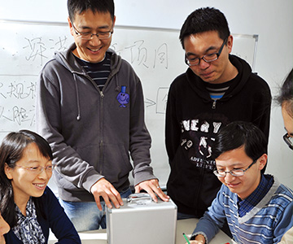

首页
技术转移
技术转移简介
以技术转移带动团队、平台、成果为区域产业发展服务是我院实现“扎根深圳”办学定位的重点工作。为实现与产业深度结合的目标，2011年10月我院成立技术转移办公室，相关技术转移工作拓展卓有成效。我院继2014年获批列入深圳市技术转移机构之后，2015年，获批列入第六批国家技术转移示范机构。

我院始终以服务地方经济建设为己任，高度重视技术转移工作的开展，形成以市场为导向、研发为支撑、效益为目标、与现代市场经济相符的技术集成和商业模式创新机制，使高校的技术成果真正与产业对接。建院以来，我院已与1000多家企业建立了合作关系，累计承担横向科研课题1500余项，合作项目经费超过5亿元。并且，在与企业产学研合作的过程中，形成了一整套特色鲜明的技术转移方法体系，包括：
1.项目研发过程中技术应用方、技术研发方和产业化实施方三方参与，促进原创成果与产业和市场的快速对接，提高研发速度、降低研发成本；
2.项目开发向产业方向延伸：通过在实验室建立生产线的方式，由企业方派遣技术工人和工程师参与中试，将企业需求、员工培养、技术革新放入同一系统进行优化；
3.以应用为着眼点进行技术集成：直接提出具体技术需求，将实际应用点作为技术开发的主导方向，提出新方法和计算模型，成功设计了具有自主知识产权的产品并向企业应用；
4.变“输血”为“造血”：不局限于技术成果的产业化实施，更重要的在于为企业提供技术成果、培养技术人才、增强企业家技术战略意识，建立合作研发机构，通过深入、广泛的合作将企业培养成为真正的技术创新主体。
一、机制创新
2016年我院正式出台《清华大学深圳研究生院促进科技成果转化管理办法（试行）》，《办法》中规定：“科技成果以技术许可、转让等方式进行转化所获得的现金收益（扣除转化过程中的直接费用等），30％归我院所有，70％归成果研发团队和完成人所有。”“ 科技成果以作价投资方式进行转化所获得的股权，30%归我院所有，由我院授权的企业代为持有并管理；70%归成果研发团队和完成人所有。”相关工作的开展得到全院教师的积极响应，截止目前，我院已成功完成3项成果作价入股工作：
“10kV配网开关柜绝缘修复技术”专有技术1项作价20万元，技术入股“成都清威科技有限公司”，占股10%“物流机器人定位与多车协调控制技术” 软件著作权2项作价166.67万元，技术增资入股深圳若步智能科技有限公司，占股25%，并获得A轮融资。
“eNDOS嵌入式云存储相关技术”专利作价1561.22万元，与重庆高新区开发投资集团有限公司共同成立“重庆高开清芯科技产业发展有限公司”，我方技术股份占高开清芯公司股份的51%。
二、产业孵化
为加快我院科研成果转化，我院划拨660余万元设立“技术转移项目孵化专项”、“技术转移产业化专项”两类基金，支持7项技术转移项目产业化研发，至2017年所有项目均顺利结题。相关研究，共申请专利成果47项，其中发明专利32项，占比68%；发表SCI、EI论文24篇，培养博士研究生7人、硕士研究生30人。
项目执行过程中实现2项专利技术成果转化（纳米磷酸铁及磷酸铁锂的制备方法，转让金额200万元），搭建了纳米磷酸铁产业化中试平台、实现新型陶瓷膜的国产化、完成LED前照灯工程样机的设计、完成深水油气开采多相流在线测量技术样机、完成镍离子电池自主知识产权布局、实现基于肝素类复合脂质体的糖尿病足修复功能外用制剂研制、完成了计划中的嵌入式云存储物联网操作系统eNDOS完整源代码设计。各类项目均获得了一系列具有产业应用前景的技术成果。
此外，我院与力合科创集团有限公司共同成立 “深圳力合清创科技成果转化平台”，为我院科技成果产业化项目进行投资、孵化。目前，先后走访实验室20余个，直接对接教师30余人，已完成首个创业投资项目 “移动大气监测项目-深圳市环思科技有限公司”项目。该平台的建立为我院技术转移工作的开展构建开放的技术转移投融资环境，并建设与产业深度结合的产学研资一体化联合体系。
三、产业化项目介绍
在推动技术转移的过程中，我院产生了一批具有明显示范效应技术转移案例，信息科学与技术学部钱可元老师参与的项目“调控光线行为的三维自由光学曲面构建及其在半导体照明中的应用”获2014年度国家技术发明二等奖。该研究形成的专利技术转让给东莞勤上光电集团后，得到了工业化的大批量应用，几年的时间里，产生的产值超过了25亿元，产品应用到了国内外的多个市政道路及室内照明，并成功应用于人民大会堂的万人宴会厅，促进了公司的上市，也大大推动了LED照明产业在中国乃至全世界的发展。生命与健康学部何永红老师主导的项目“OCT成像技术”将基础科学研究成果应用于生物医疗仪器领域打破眼底扫描仪市场由美、日、德 三国垄断的局面，为企业创造经济效益2亿余元。
以技术转移为呈现方式，我院将继续贯彻“心系清华、扎根深圳”的建院理念，持续推动高水平科研成果产业化研发工作，为产业界不断输入技术、人才两大新鲜“血液”，为科技、产业、经济的发展不断贡献清华力量。